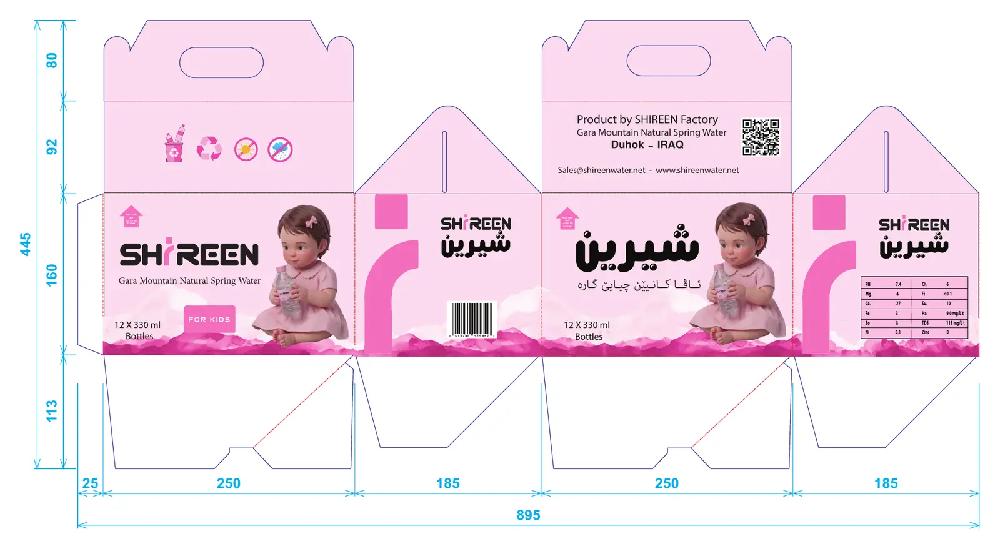
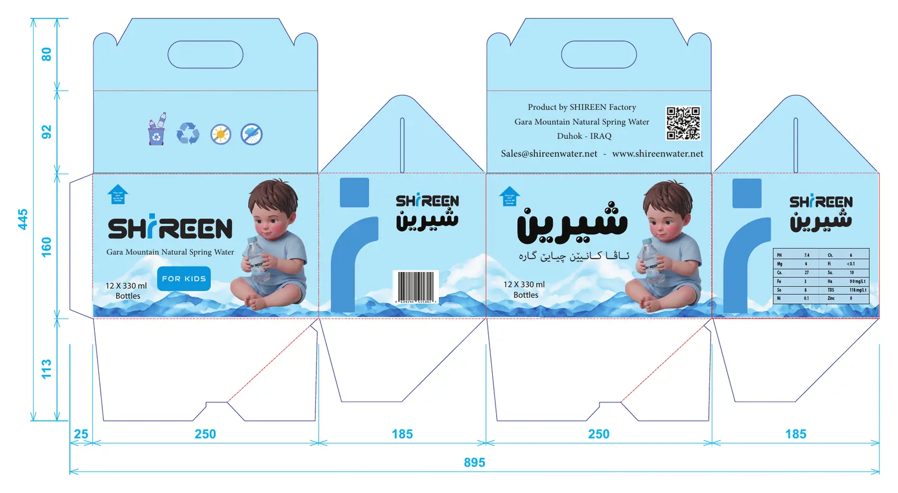
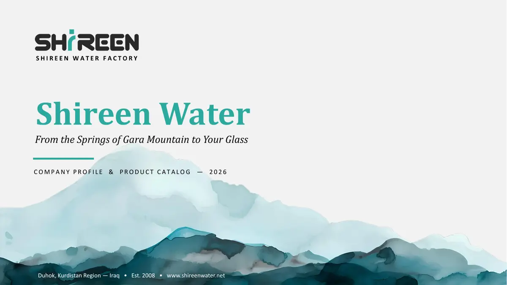

تغليف وعرض / عميل واحد، ثلاث قطع
شيرين: من العبوة
العميل مصنع مياه شيرين — دهوك
القطع ملصق، كرتونتان، ملف شركة
اللغات إنجليزي، كوردي، عربي
دوري تصميم القطع الثلاث كاملة، بما فيها صور الطفلين
كرتونتا خط الأطفال: النسخة الزرقاء والنسخة الوردية.
السياق
شيرين مياه من ينابيع جبل گاره في دهوك. عملت للشركة على ثلاث قطع: ملصق عبوة الأطفال، كرتونة الـ 12 عبوة بنسختين، وملف تعريفي للشركة. كل قطعة لها قارئ مختلف — طفل وأهله عند الرف، موزّع يشيل كرتونة، وعميل تجاري يتعرّف على المصنع — لكن لازم تبان كلها من نفس العائلة.
01 الملصق — عبوة 330 مل 02 الكرتونة — 12 × 330 مل، وردية وزرقاء 03 ملف الشركة — 10 شرائح
02 / الكرتونة
كرتونة بنسختين، ونفس النظام.
المحتوى 12 عبوة × 330 مل
المقاس مفرودًا 895 × 445 مم
الوجوه وجهان 250 مم، جانبان 185 مم
النسخ وردية (طفلة)، زرقاء (طفل)

النسخة الوردية مفرودة، بالقياسات بالمليمتر.

النسخة الزرقاء: نفس المخطط، لون وصورة مختلفان.
طفلة وطفل من نفس العائلة: صورتان من عملي بنفس الأسلوب والوضعية — جالسان ويحملان العبوة — حتى تبان النسختان كزوج.اللون يفرّق النسختين، والباقي ثابت: الشعار والنصوص والباركود والجدول بنفس المكان في الاثنتين. يتغيّر فقط اللون والطفل في الصورة.امتداد للملصق: نفس الوجه الإنجليزي ونفس الوجه الكوردي، بحجم أكبر، فالكرتونة على الرف تشبه العبوة اللي داخلها.لكل وجه وظيفة: الوجهان العريضان للاسم والصورة، جانب للباركود، جانب لجدول المعادن، واللسانان العلويان لمعلومات المصنع والتواصل.للحمل والتخزين: مقبض مقصوص في الأعلى، وسهم «هذا الاتجاه للأعلى» على الوجه، وأيقونات إعادة التدوير والتخزين.
الوجه الأمامي — الأزرق.
الوجه الأمامي — الوردي.
03 / ملف الشركة
ملف شركة يحكي من النبع للباب.
النوع ملف تعريفي وكتالوج منتجات
الصيغة 10 شرائح عرض، 16:9
اللغة إنجليزي
القارئ عملاء وموزّعون وشركات
الشرائح العشر بالترتيب.
قصة بترتيب الماء نفسه: المصدر في الجبل، ثم التنقية، ثم المعايير، ثم المنتجات، ثم التوزيع، ثم التواصل.لون واحد للهوية: أخضر مائي للبطاقات والأيقونات، على خلفيات فاتحة، بدون ألوان إضافية.الجبل يتكرّر: رسم جبال بأسلوب الألوان المائية في أسفل الشرائح يربط الملف بجبل گاره.الأرقام في بطاقات: كل رقم مهم في بطاقة لوحده بأيقونة، ومراحل التنقية الخمس مرقّمة بالترتيب.عنوان صغير فوق كل عنوان: سطر تصنيف صغير مثل COMPANY OVERVIEW يخبر القارئ وين هو بالملف.ملف تقدر الشركة تعدّله: مبني في PowerPoint بخطوط النظام، فالشركة تحدّث الأرقام بنفسها.

الغلاف.
مراحل التنقية الخمس.
كتالوج المنتجات.
الحدود
اللقطات من ملفات التصميم، مش تصوير لمنتجات مطبوعة. الأرقام والمعلومات داخل ملف الشركة من الشركة نفسها. للمنتج موقع رسمي: shireenwater.net
عندك منتج يحتاج تغليف كامل؟
من الملصق للكرتونة لملف الشركة — أرسل المقاسات واللغات والمعلومات الإلزامية.
تواصل معي